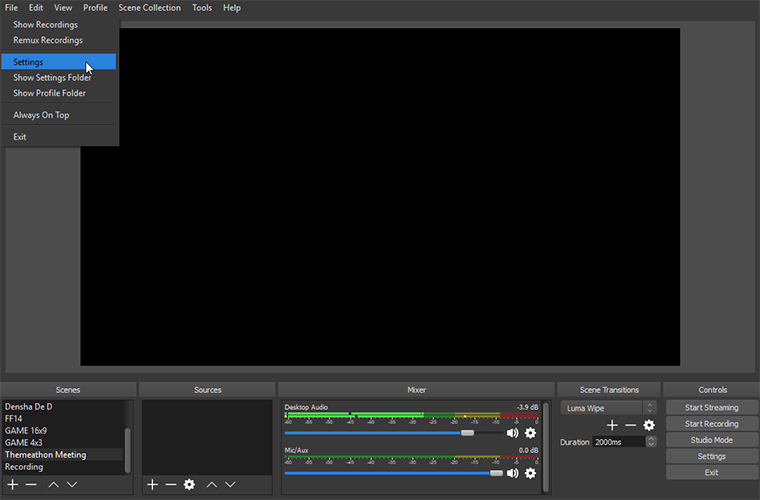
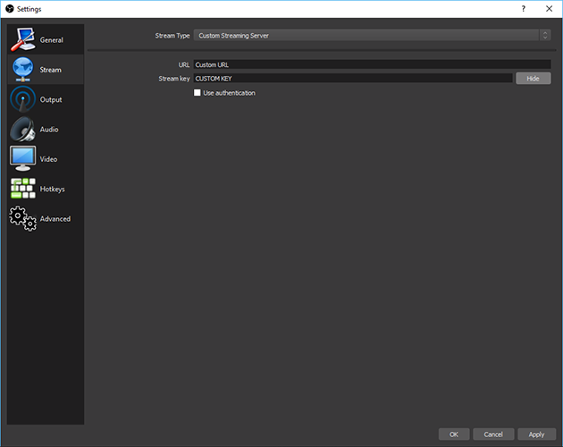
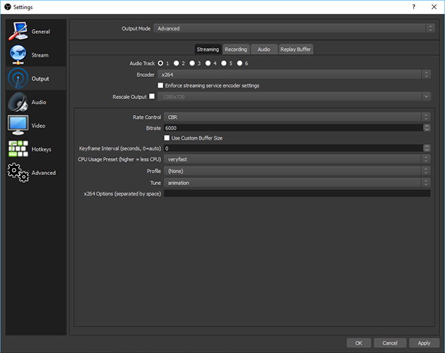

Welcome to our rules and guidelines
The following document will introduce you into a guide on how to broadcast your content to our event.
We also provide you with helpful Information and important rules you have to follow.
First of all we want to thank you for submitting your content to our event.
With your help we will have a huge success with the fundraising for the Save the Children foundation.
Before you can broadcast to Themeathon we have to introduce you to our rules in regards to the event.
Please keep in mind that you are broadcasting to collect money for a charity fundraising.
Rules:
Different from most charity events we are a 18+ marathon.
That means you can swear of course but please keep it minimal and don’t be to extreme with your sense of humour.
Because we collect money for children you shouldn’t say something against children e.g. ‘I like to kill children / kids’.
If you break this rule, we will end your run immediately and you will be banned from this and all future events. We don’t tolerate racism or sexual offense.
If your language is too heavy for our event we will send out a warning towards you. You will get up to 2 warnings until we will end your run.
Keep in mind that we want to help an awesome foundation and don’t want to ruin all the fun for everyone.
We also allow memes during the runs, because memes are a big and important thing in the internet, but keep them within our rules.
How to broadcast
Now we want to show you how you can actually broadcast to Themeathon.
Before you start broadcasting to Themeathon, you have to
use OBS-Studio. (latest version)
This guide is for OBS-Studio only. If you use a different streaming software we won’t give you any support!
Let us begin with the step-for-step guide. (Click the screenshots for a visual guide)
Step 1:
Download and install OBS-Studio.
Step 2:
Open OBS-Studio and click on File --> Settings.

Now go to the tab labeled "Stream".
Next change the Stream type to "Custom streaming service" and set the URL to "the given URL from a Staff" and paste the stream key in that
a "Staff Member" sent you.

Step 3:
Now use your standard settings you would use for your personal stream.
For the best viewing experience on Twitch we would recommend 1080p, 60fps and 6000 kbit/s. You don’t have to fulfill these recommendations.

Step 4:
Please only stream your game and audio.
Audio includes: Ingame sound, microphone and your co-commentator if you have one.
Please balance everything very well.
On special occasions we also allow a webcam e.g. “One Handed Speedrun” or “Special Controller”.
Otherwise we don’t allow using a webcam. (Please ask a staff member for permission)
Step 5:
Join our Discord and wait in the “speedrun-waiting-room” voice channel. You should join it roughly 20 minutes before your run starts.
Through that we can ask for feedback and answer general questions and of course provide that you are ready and prepared for your run.
Step 6:
Start your run and have fun!
Thank you very much for reading this document, and on the behalf of the Themeathon team, we want to thank you for providing your content to the event!
Sincerely,
The THEMEATHON TEAM